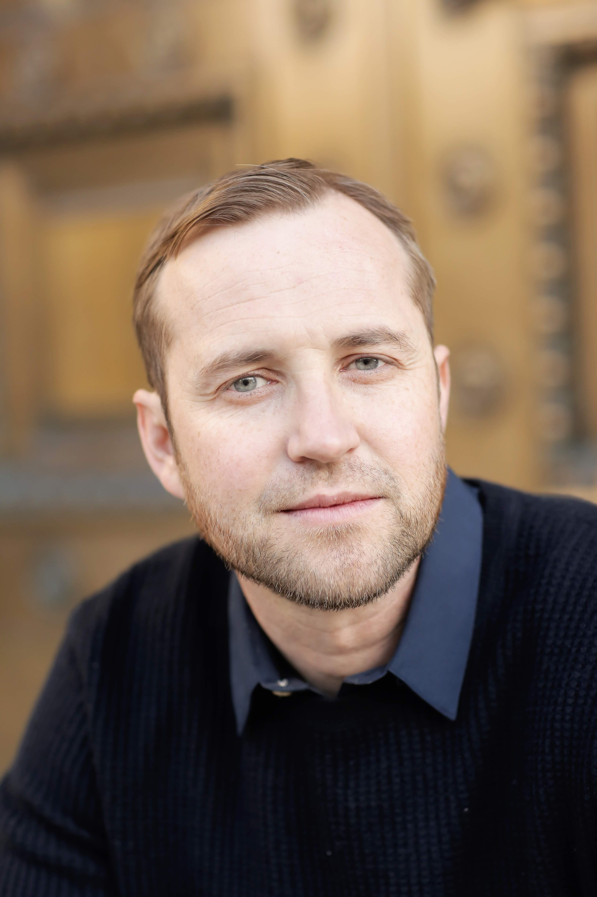

BLAKE THOLEN CLARK– Filmmaker TV Producer/Director | Full Stack Developer
Experienced in Corporate and Independent Productions: 801.712.2824 REELS | LINKEDIN | Blake.17clark@gmail.com
Experience
Park City/Vail Resorts | Park City, Utah | TV Producer | 1/2013-Present
–Setup TV studio: Lighting, cameras, mics, greenscreen, drapes, etc.,
–Acted as Director/Producer organizing interviews, writing content, coaching
–Worked with a small post-production team to edit/create entertaining segments
Video Work: Pond Skim, Teaching Model & Spring Conditons.
Flowing Freeride | Park City, Utah | Head Developer & Spokesperson | 5/2013–Present
–Developed & launched passion project of online video snowboard training series
–Managed all levels of production: scripts & planning, filming, editing, distribution
–Acted as project spokesperson, course instructor, on-air talent, business management
Websites: Flowingfreeride.com, Flowing Freeride YouTube & Snowboardclass.com
Sandy City | Sandy, Utah | Freelance TV Producer | 8/2018-11/2018
–Directed talent, camera work, edited and produced several corporate videos
Video Work: Scald Burns, Remember 9-11 & Healing Field.
KTV/Kroger | SLC, UT | Corporate TV Producer/Director | 10/2013-11/2016
–Handled all areas of TV production, scheduling, directing, camera, editing, etc.,
–Traveled to various locations (private jet, econ, car) to shoot content
–Directed/Produced live shows from KTV’s control room using Tricaster technology
–Created New Graphics Package & Setup new technology and software for live show
Video Work: Actor Reel, & Animation Reel.
Utah State Government Short Public Films | SLC, UT | TV Producer | 4/2012–4/2016
–Shot scientific based filmed interviews of keynote subjects & broll (Div of Air Quality)
–Handled production and post ensured piece told client’s story and message to public
Video Work: It's Up To All Of Us
American Idol/19 Entertainment | SLC, UT | Camera Operator | 07/2013-10/2013
–Operated camera & grip to gain large scale TV production experience
Productions Crewed On: SLC Auditions & SLC Show
KUED Channel 7 | SLC, UT | Technical/Craft/Long Format TV | 01/2013-04/2013
–Worked with pros on projects including field/studio/post audio & video production
–Gained experience working with high profile public figures such as Jesse Jackson
–Advised by Production Director, Ken Verdoia, my work supported producer position
Les Rencontres Indie Short | Montréal, QC | 5/2012–8/2012 | Dir./Screenwriter/Editor
–Drafted original screenplay, revised under Rob Schmidt, Hollywood Director
–Planned shot lists, scenes, storyboards, hired actors, locations and schedules
–Worked as film director-engaging talent, collaboration with crew
–Obtained original music composer and approved final film score
–Final film screened at the National Film Board of Canada
Education
London Film School, UK • Directors Intensive | 2017
University Of Utah • BA Film & Media | 2013 • Art Technology Certification | 2012 • BA Economics | 2007
Champlain College Montréal Campus • Urban Indie Film Intensives | 2012